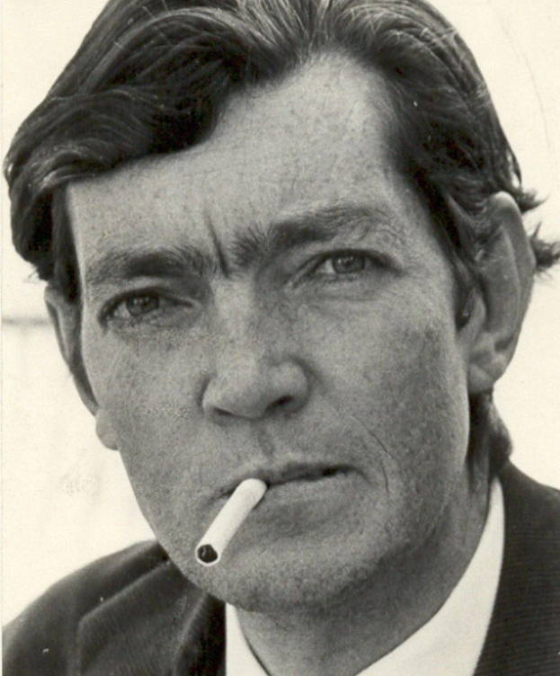

Dijo alguna vez Cortazar
Julio Cortázar fue un famoso escritor y pensador argentino nacido en el año 1914.
- Hasta lo inesperado acaba en costumbre cuando se ha aprendido a soportar.
- Creo que todos tenemos un poco de esa bella locura que nos mantiene andando cuando todo alrededor es tan insanamente cuerdo.
- Nada está perdido si se tiene el valor de proclamar que todo está perdido y hay que empezar de nuevo.